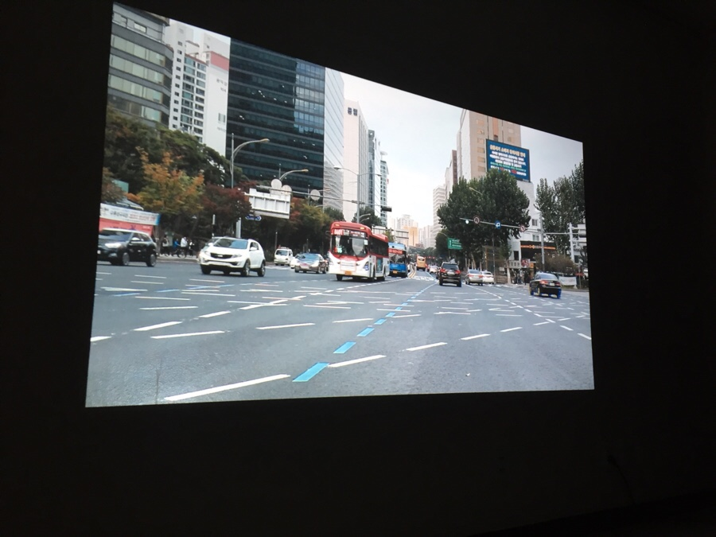
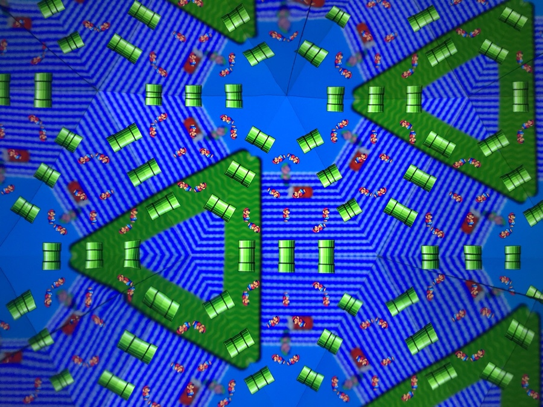
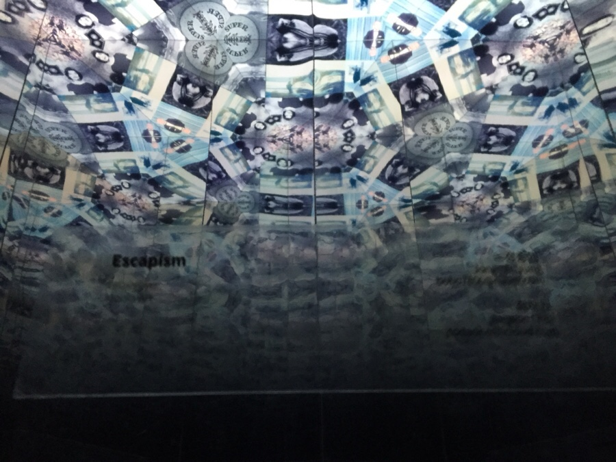

Escapism
2016
Media Installation / Video
Adobe Photoshop, Adobe After Effect, Adobe Premiere
With Jaewon Choi






산업화 이후 자본주의가 확산되며 인류에게는 모더니즘이라는 이름의 사상 아래 '효율성'이라는 중요한 가치가 생긴다. 열심히 자신의 길을 달리지 않으면 도태되고, 그 달린 정도를 토대로 남들에게 자신의 가치를 평가받는 사회가 도래한다. 그리고 우리는 끝없이 달리길 기대받는다. 남들보다 더 빠르게, 멀리 달려야 한다. 그러한 경쟁사회 속에서 인간들은 더 많은 스트레스를 받게 된다. 자신들의 능력이 더 뛰어나지길 열망하지만 현실은 그리 호락호락하지 않다. 그리고 그 엄청난 스트레스 때문에 인간들은 '도피처'를 찾게 된다. 도피처를 '적당히' 이용하는 '멋진' 사람들도 있지만, 도피처 속에 자신을 가둬버린 '하찮은' 사람들도 있다.
미셀 푸코의 '광기의 역사'라는 책의 앞부분에 '광기'라는 개념이 어떻게 인류에게 발현되었는지 나타나 있다. 고대 중세 이래로, 르네상스 시대까지만 해도 미친 사람들은 하나의 초월적인 존재, 신을 영접한 존재 등으로 여겨졌다. 하지만 17세기 이후 산업화가 대두되며 그들은 일을 하지 않기에 '범죄자' 취급을 받기 시작한다. 하지만 다른 범죄자들은 노역을 할 수 있었지만 그들은 그럴 '능력'조차 없었다. 그 때 비로소 그들은 정신'병'자 취급을 받는다. 결핍이 있다고 판단되어 격리당하기 시작한 것이다. 사회에서 요하는 노동력이 그들에게는 없기에, 그들은 병자가 되었다. 인류에게 광기가 정신병으로 여겨지기 시작한 순간이다. 그렇다면 지금 도피처에 자기 자신을 가둔 '중독자'들을 다시 한번 바라보자. 그들도 경쟁력을 갖추길 요구하는 이 사회에서 원하지 않는 인간상들이다. 우리는 그들을 하나의 '병'자 취급을 한다. 그리고 끊임없이 달리는 것을 당연한 '가치'로 여긴다. 만약 이 상황에 '문제'가 있으면, 그 문제는 중독자들의 사회에서 요구하는 길을 이탈하여 자신만의 세상에 안주하는 행위에 있는 것인가, 아니면 그들을 '문제'삼는 우리의 사회에 있는 것인가?